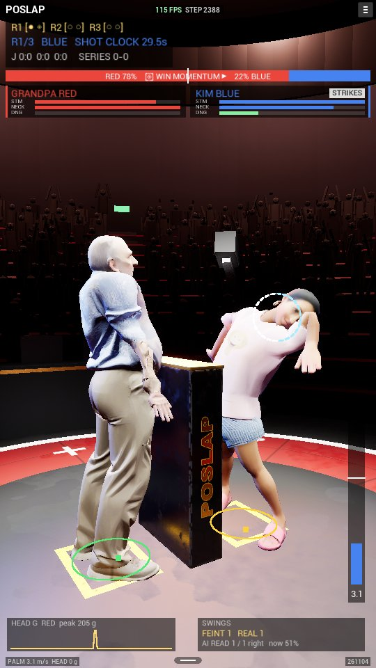
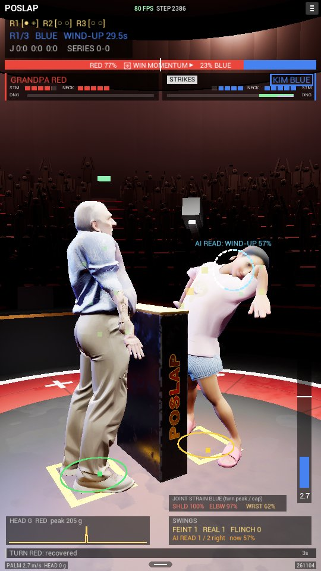
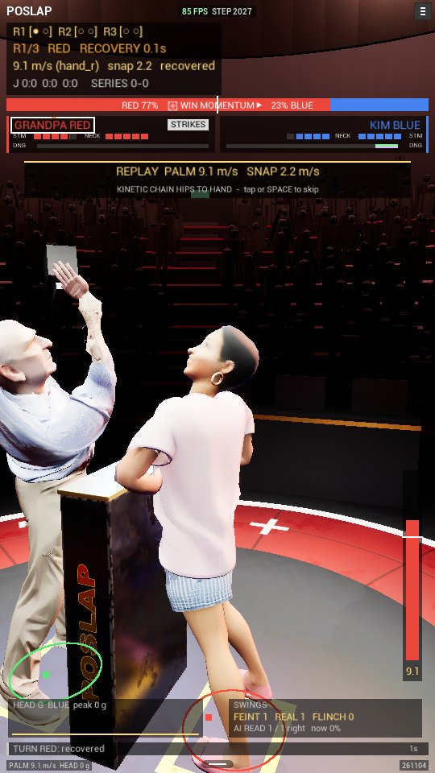
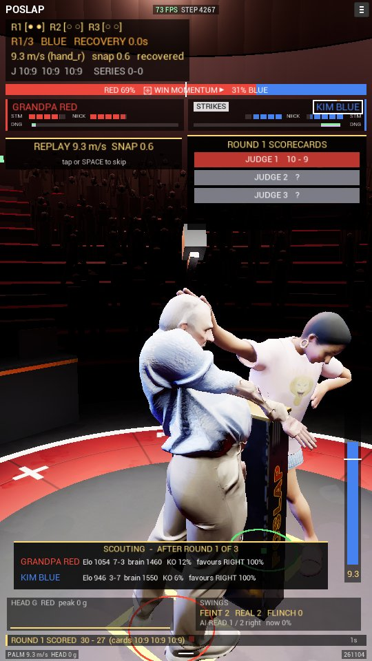
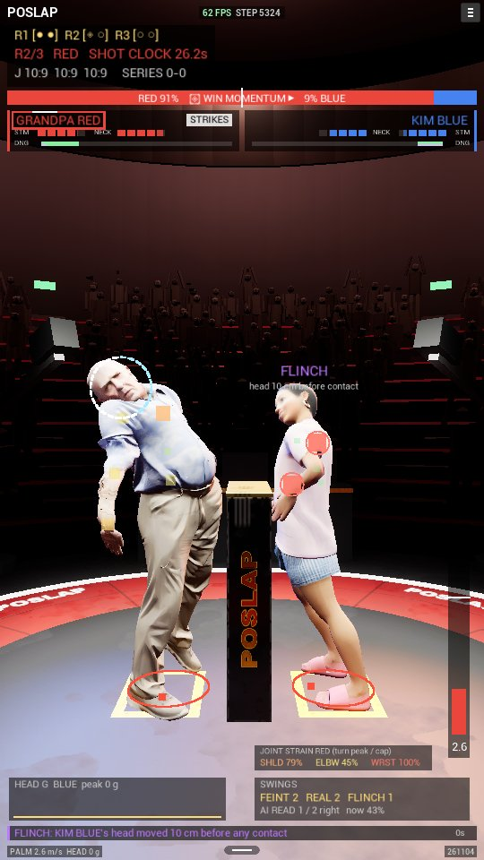
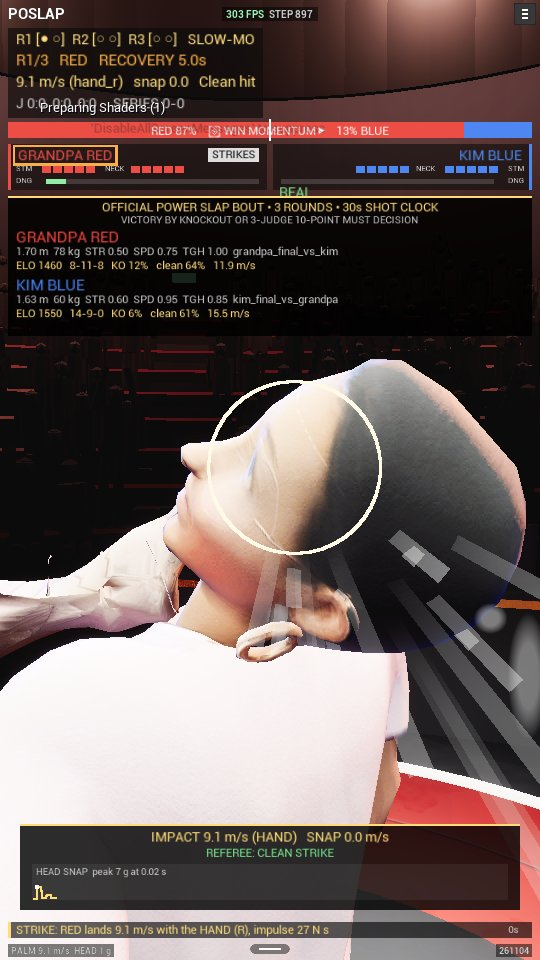
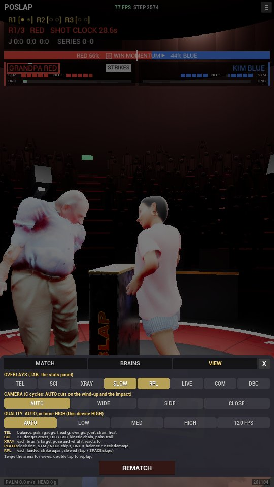
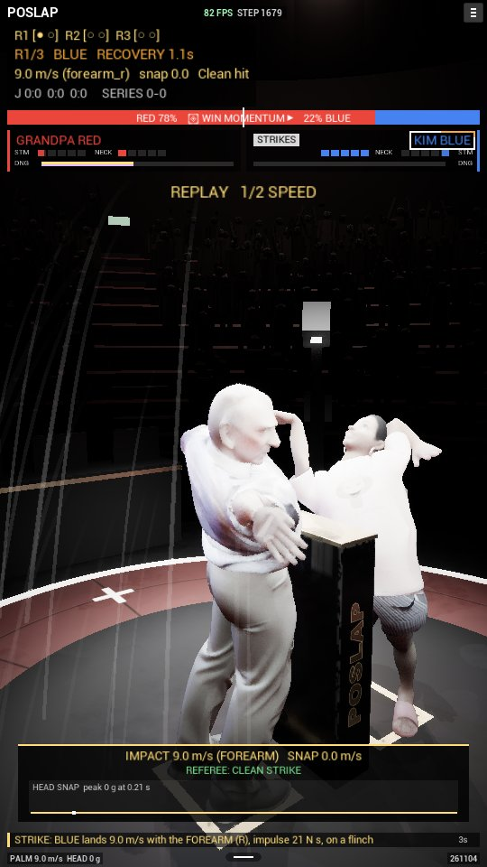

2026-11-04, the Unreal stream of the three-stream feature pass. Display only: every new piece reads MuJoCo's render snapshot and
the HUD copy of the match, and writes nothing back. -SlapDisplayPass=0 (cvar slap.DisplayPass 0) turns
all of it off. Screenshots 540×960, L_Arena_grandpa_vs_kim, -SlapSeed=7 -SlapFirst=0 -SlapWalkIn=0 -SlapShotEvents:
the same seeded match twice, so "before" (pass off, the same build) and "after" (pass on) show the same physics frame.
Boxes mark what changed; image coordinates are the 540×960 canvas.
on : Logs/Gameplay/261104/match_232131_0_ue.jsonl 47 events, 564 frames off: Logs/Gameplay/261104/match_232453_0_ue.jsonl 47 events, 564 frames (-SlapDisplayPass=0) event types: match_start 1, turn_start 6, feint 6, strike 6, strike_result 6, turn_end 6, impact 6, condition 6, round 3, result 1 events identical: True frames identical: True (564 compared) sha256 both files: ec389a4aa0cb9679ab6ca6ca4d7a72352472ce9d3a7df43b01ad96d0d2ac07f0 third run (pass on, after the last display fixes): match_232852_0_ue.jsonl, same sha256








-SlapFxTest=5 -SlapShot=7.5: the faked strike and KO still fire (spray, flush, ring), with the pass on.
Results: before / after.| Check | Result |
|---|---|
| Editor build (PoSlapUnrealEditor Win64 Development) | Succeeded |
-game -SlapUiTest (windowed 540×960) | PASS: 0 of 17 clicks wrong; flow Menu > Gameplay > Result > Menu > Reset > Gameplay; 10/10 widget checks: danger (0.30 0.60 1.00), sense (24 arm actuators), flinch (armed 8 turns), ticker (22 lines), ring, chips, strain (TAB), replay (1 of 1 due), scouting (549 frames, 2 rounds), mirror (red x 8-267, blue x 273-532 in 540) |
-SlapFxTest | works (screenshot above) |
| Parity on vs off | byte-identical match logs (events and frames) |
-SlapLayoutTest | 3 fails, one per tab: "on the centre 1" = the tale-of-the-tape card at match start. Identical with the pass off: pre-existing, not from this pass |
| Render audit at HIGH (logged at every tier change) | contact shadows on (key/rims 0.04; CINEMA "contact" 0.08), reflections Lumen with screen traces on, r.SSR.Quality 3 for the SSR path, audio spatialised (HRTF) |
| fps 720×1280, HIGH pinned, scalability 3 | 69-97 fps (10 s averages over 100 s, GPU 4.7-8.3 ms), floor > 30 |
Saved/Config/WindowsEditor/GameUserSettings.ini (scalability 0), so every later launch's "HIGH" was LOW. The HUD now puts the launch
scalability back on EndPlay; the ini was reset to 3.Scripts/broadcast_metasound.py builds /Game/Audio/MS_ImpactSynth headlessly through the
MetaSound Builder API (noise → biquad low pass × skin envelope + sine × body envelope, × Energy). Layered on the recorded takes on desktop,
driven by the impulse. Built and loaded (synth 1 in the asset line); not yet judged by ear.